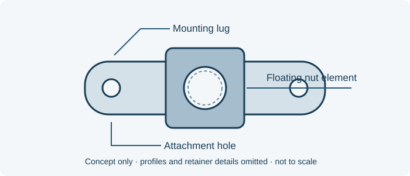

// TECHNICAL RESOURCES
NAS1791 floating replaceable-element nutplates.
Identify selected stocked NAS1791 two-lug floating nutplates, retain the complete counterbore designation and request a quote from Webson.
// DIMENSIONS & PART IDENTIFICATION
Two-lug floating nutplate concept

Schematic only; not to scale. Letter labels are keys for this illustration. Use the applicable part specification for dimensions, tolerances and measurement conventions.
// PART IDENTIFICATION
A floating nutplate with a replaceable element
NAS1791 identifies two-lug, self-locking floating nutplates with a variable counterbore and a replaceable nut element. Attachment geometry, locking construction and the counterbore selection are part of the requirement.
// STOCKED SELECTION
Stocked NAS1791 part numbers
Selected stocked ordering designations are listed below. Confirm the complete configuration against the required drawing and standard issue.
No matching entries. Clear the filters or try a shorter search.
| Part number | Configuration | Stock status | Request pricing |
|---|---|---|---|
| NAS1791C08-3 | Two-lug floating; replaceable nut element | Stocked item | Quote NAS1791C08-3 → |
| NAS1791A3-1 | Two-lug floating; replaceable nut element | Stocked item | Quote NAS1791A3-1 → |
Stocked items are subject to prior sale. Request a quote to confirm current availability and lead time.
// COMPLETE CALLOUT
Keep every part of the ordering designation
NAS1791C08-3 and NAS1791A3-1 are distinct stocked configurations. Retain the letter code, size identifier and final dash number exactly as specified.
This selected-stock table identifies ordering designations and family construction. Send the drawing or required standard issue so Webson can confirm the thread, material, finish and counterbore details for quotation.
// DRAWING CHECK
Review the attachment and nut element together
Compare the mounting-hole pattern, retainer envelope, counterbore and required locking feature. A floating nutplate and a fixed nutplate serve different drawing requirements.
A replaceable element does not by itself approve mixing components from another nutplate family. Include any approved-source and component-compatibility requirements.
// SOURCE WITH WEBSON
Related floating nutplates
Provide quantity, required delivery date and any certificates or lot-traceability requirements with the complete designation.
// BUYER CHECKLIST
Prepare the requirement for quotation
- Complete designation, including all material, finish and locking suffixes.
- Quantity, required delivery date and controlling drawing or specification issue.
- Required certificates, source restrictions and lot traceability.
// SOURCE WITH WEBSON
Have a part number or bill of material?
Send the complete designation, quantity, required delivery date and documentation requirements. Webson will review your requirement for quotation.